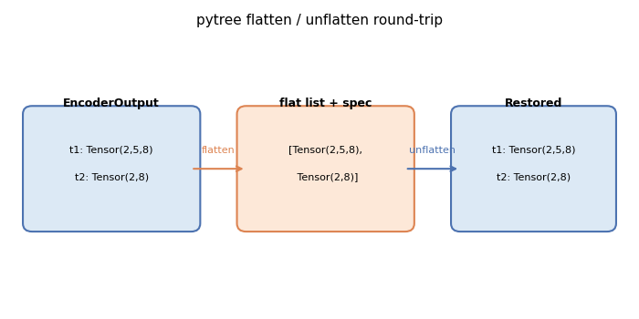

Note
Go to the end to download the full example code.
Registering a custom class as a pytree node¶
torch.export.export() requires every object that appears as a model
input or output to be decomposable into a flat list of
torch.Tensor objects. torch.utils._pytree handles this
decomposition, but it only knows about built-in Python containers.
Custom classes — including all the cache types from transformers —
must be explicitly registered before exporting.
This example walks through the three steps:
Writing flatten / unflatten / flatten-with-keys callables for a custom dict-like class.
Registering the class with
register_class_flattening.Verifying the round-trip and then cleaning up with
unregister_class_flattening.
See Flattening Functionalities (torch) for a full description of the flattening design including the transformers cache registrations.
from dataclasses import dataclass
import torch
import torch.utils._pytree
from yobx.torch.flatten import (
make_flattening_function_for_dataclass,
register_class_flattening,
unregister_class_flattening,
)
1. Define a custom dict-like container¶
We create a minimal dict subclass that stores named tensors. This pattern
mirrors how transformers.modeling_outputs.ModelOutput works.
class EncoderOutput(dict):
"""Holds the output tensors produced by a (mock) encoder."""
2. Write the three required callables¶
flatten — extract a flat list of tensors plus a context (the key order) that is needed to reconstruct the original object.
flatten_with_keys — same, but pair each tensor with a
torch.utils._pytree.MappingKeyso thattorch.export.export()can refer to each leaf by name.unflatten — given the flat tensors and the context, recreate the original
EncoderOutput.
def flatten_encoder_output(obj):
keys = list(obj.keys())
return [obj[k] for k in keys], keys
def flatten_with_keys_encoder_output(obj):
keys = list(obj.keys())
values = [obj[k] for k in keys]
return [(torch.utils._pytree.MappingKey(k), v) for k, v in zip(keys, values)], keys
def unflatten_encoder_output(values, context, output_type=None):
return EncoderOutput(zip(context, values))
3. Register the class¶
register_class_flattening wraps
torch.utils._pytree.register_pytree_node and returns True when the
registration succeeds (False when the class is already registered).
registered = register_class_flattening(
EncoderOutput,
flatten_encoder_output,
unflatten_encoder_output,
flatten_with_keys_encoder_output,
)
assert EncoderOutput in torch.utils._pytree.SUPPORTED_NODES
print("registered:", registered)
registered: True
4. Flatten a nested structure¶
Once registered, torch.utils._pytree.tree_flatten can decompose any
nested Python structure that contains EncoderOutput objects.
output = EncoderOutput(t1=torch.zeros(2, 5, 8), t2=torch.ones(2, 8))
flat, spec = torch.utils._pytree.tree_flatten(output)
print("number of leaf tensors:", len(flat))
for i, t in enumerate(flat):
print(f" leaf[{i}]: shape={tuple(t.shape)}, dtype={t.dtype}")
number of leaf tensors: 2
leaf[0]: shape=(2, 5, 8), dtype=torch.float32
leaf[1]: shape=(2, 8), dtype=torch.float32
5. Unflatten and verify the round-trip¶
torch.utils._pytree.tree_unflatten() reconstructs the original
EncoderOutput from the flat list using the spec returned by
tree_flatten.
restored = torch.utils._pytree.tree_unflatten(flat, spec)
print("restored type :", type(restored).__name__)
print("restored keys :", list(restored.keys()))
assert torch.equal(restored["t1"], output["t1"])
assert torch.equal(restored["t2"], output["t2"])
print("round-trip OK")
restored type : EncoderOutput
restored keys : ['t1', 't2']
round-trip OK
6. Auto-generate callables with make_flattening_function_for_dataclass¶
For classes that already expose .keys() / .values() (all
transformers.modeling_outputs.ModelOutput subclasses do),
make_flattening_function_for_dataclass
generates the three required callables automatically.
@dataclass
class EncoderOutput2:
"""Holds the output tensors produced by a (mock) encoder."""
t1: torch.Tensor
t2: torch.Tensor
supported = set()
flatten_fn, flatten_with_keys_fn, unflatten_fn = make_flattening_function_for_dataclass(
EncoderOutput2, supported
)
print("auto-generated names:")
print(" ", flatten_fn.__name__)
print(" ", flatten_with_keys_fn.__name__)
print(" ", unflatten_fn.__name__)
print("supported set:", {c.__name__ for c in supported})
auto-generated names:
flatten_encoder_output2
flatten_with_keys_encoder_output2
unflatten_encoder_output2
supported set: {'EncoderOutput2'}
Let’s register.
registered = register_class_flattening(
EncoderOutput2, flatten_fn, unflatten_fn, flatten_with_keys_fn
)
assert EncoderOutput2 in torch.utils._pytree.SUPPORTED_NODES
print("registered:", registered)
registered: True
New test.
output2 = EncoderOutput2(t1=torch.zeros(2, 5, 8), t2=torch.ones(2, 8))
flat, spec = torch.utils._pytree.tree_flatten(output)
restored = torch.utils._pytree.tree_unflatten(flat, spec)
print("restored type :", type(restored).__name__)
print("restored keys :", list(restored.keys()))
assert torch.equal(restored["t1"], output["t1"])
assert torch.equal(restored["t2"], output["t2"])
print("round-trip OK again")
restored type : EncoderOutput
restored keys : ['t1', 't2']
round-trip OK again
7. Unregister to restore the original state¶
After exporting (or when running inside a test) call
unregister_class_flattening to undo the
registration and leave torch.utils._pytree.SUPPORTED_NODES exactly as
it was before.
assert EncoderOutput in torch.utils._pytree.SUPPORTED_NODES
assert EncoderOutput2 in torch.utils._pytree.SUPPORTED_NODES
unregister_class_flattening(EncoderOutput)
unregister_class_flattening(EncoderOutput2)
print("EncoderOutput and EncoderOutput2 unregistered")
assert EncoderOutput not in torch.utils._pytree.SUPPORTED_NODES
assert EncoderOutput2 not in torch.utils._pytree.SUPPORTED_NODES
EncoderOutput and EncoderOutput2 unregistered
Plot: pytree flatten / unflatten diagram¶
The diagram below illustrates the flatten→leaf-list→unflatten round-trip
for an EncoderOutput container with two tensor fields.
import matplotlib.pyplot as plt # noqa: E402
import matplotlib.patches as mpatches # noqa: E402
fig, ax = plt.subplots(figsize=(7, 3.5))
ax.set_xlim(0, 10)
ax.set_ylim(0, 5)
ax.axis("off")
ax.set_title("pytree flatten / unflatten round-trip", fontsize=11)
# Container box
container = mpatches.FancyBboxPatch(
(0.3, 1.5),
2.6,
2.0,
boxstyle="round,pad=0.15",
linewidth=1.5,
edgecolor="#4c72b0",
facecolor="#dce9f5",
)
ax.add_patch(container)
ax.text(1.6, 3.7, "EncoderOutput", ha="center", va="center", fontsize=9, fontweight="bold")
ax.text(1.6, 2.85, "t1: Tensor(2,5,8)", ha="center", va="center", fontsize=8)
ax.text(1.6, 2.35, "t2: Tensor(2,8)", ha="center", va="center", fontsize=8)
# Flat list box
flat_box = mpatches.FancyBboxPatch(
(3.8, 1.5),
2.6,
2.0,
boxstyle="round,pad=0.15",
linewidth=1.5,
edgecolor="#dd8452",
facecolor="#fde8d8",
)
ax.add_patch(flat_box)
ax.text(5.1, 3.7, "flat list + spec", ha="center", va="center", fontsize=9, fontweight="bold")
ax.text(5.1, 2.85, "[Tensor(2,5,8),", ha="center", va="center", fontsize=8)
ax.text(5.1, 2.35, " Tensor(2,8)]", ha="center", va="center", fontsize=8)
# Restored box
restored_box = mpatches.FancyBboxPatch(
(7.3, 1.5),
2.4,
2.0,
boxstyle="round,pad=0.15",
linewidth=1.5,
edgecolor="#4c72b0",
facecolor="#dce9f5",
)
ax.add_patch(restored_box)
ax.text(8.5, 3.7, "Restored", ha="center", va="center", fontsize=9, fontweight="bold")
ax.text(8.5, 2.85, "t1: Tensor(2,5,8)", ha="center", va="center", fontsize=8)
ax.text(8.5, 2.35, "t2: Tensor(2,8)", ha="center", va="center", fontsize=8)
# Arrows
ax.annotate(
"",
xy=(3.8, 2.5),
xytext=(2.9, 2.5),
arrowprops=dict(arrowstyle="->", color="#dd8452", lw=1.5),
)
ax.text(3.35, 2.75, "flatten", ha="center", va="bottom", fontsize=8, color="#dd8452")
ax.annotate(
"",
xy=(7.3, 2.5),
xytext=(6.4, 2.5),
arrowprops=dict(arrowstyle="->", color="#4c72b0", lw=1.5),
)
ax.text(6.85, 2.75, "unflatten", ha="center", va="bottom", fontsize=8, color="#4c72b0")
plt.tight_layout()
plt.show()

Total running time of the script: (0 minutes 0.058 seconds)
Related examples


Applying patches to a model and displaying the diff